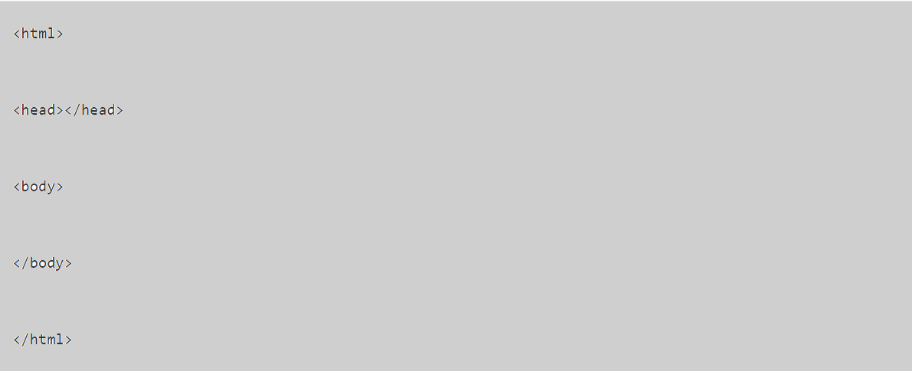
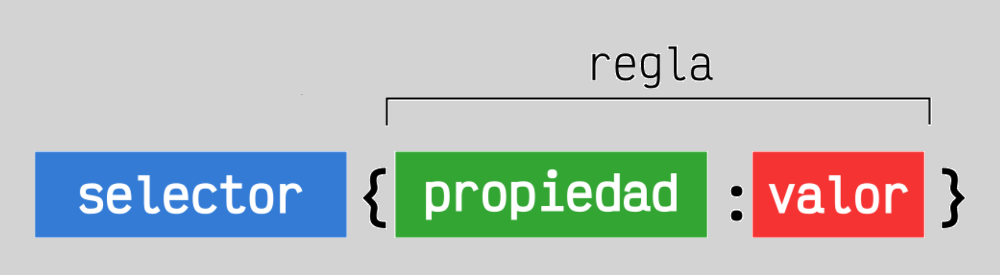
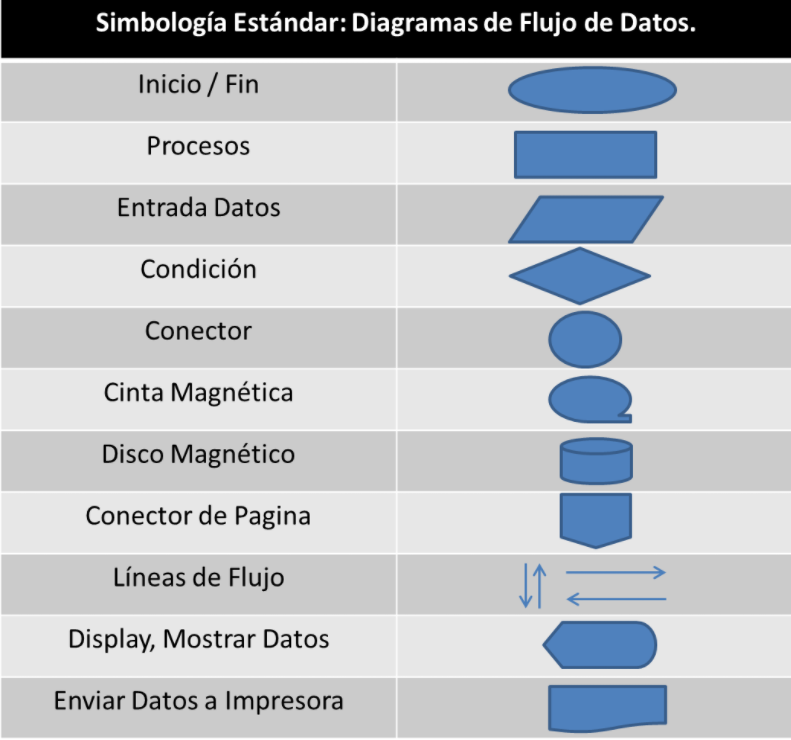

¿Qué es Programación?
Detrás de todos los programas informáticos que conocemos y usamos de manera cotidiana para facilitarnos diversas actividades de nuestro día con día, existe todo un proceso para poderlos crear. Este proceso es conocido como programación.
La programación informática es el arte del proceso por el cual se limpia, codifica, traza y protege el código fuente de programas computacionales, en otras palabras, es indicarle a la computadora lo que tiene que hacer.
Este arte se guía por una serie de normas y un conjunto de órdenes, instrucciones y expresiones que tienden a ser semejantes a una lengua natural acotada. Por lo cual recibe el nombre de lenguaje de programación. Y así como en los idiomas también en la informática existen diversos lenguajes de programación.
Diseño Web
El Diseño web se encarga de definir el apartado visual de una web; mientras que el Desarrollo web traslada esta propuesta de diseño a los lenguajes de programación web, tanto a nivel de Front-end como de Back-end. Entonces, ¿Dónde radica la confusión entre los dos términos?. Principalmente en el uso genérico que se la da a Diseño web. Habitualmente cuando hablamos de Diseño web vinculamos el término a todo el proceso de creación de una web, incluyendo el apartado visual y la programación. En ocasiones también se emplea Desarrollo web para aludir a la generación de una web, obviando que para realizar su desarrollo, necesitaremos partir de un diseño web.
¿Qué es un modelo cliente servidor?
El Cliente-Servidor es un sistema distribuido entre múltiples Procesadores donde hay clientes que solicitan servicios y servidores que los proporcionan. La Tecnología Cliente/Servidor, es un modelo que implica productos y servicios enmarcados en el uso de la Tecnología de punta, y que permite la distribución de la información en forma ágil y eficaz a las diversas áreas de una organización (empresa o institución pública o privada), así como también fuera de ella.
¿Qué es un servidor?
Es un aparato informático que almacena, distribuye y suministra información. Los servidores funcionan basándose en el modelo “cliente-servidor”. El cliente puede ser tanto un ordenador como una aplicación que requiere información del servidor para funcionar. Por tanto, un servidor ofrecerá la información demandada por el cliente siempre y cuando el cliente esté autorizado. Los servidores pueden ser físicos o virtuales.
Diferencia entre un lenguaje compilado e interpretado
La principal diferencia entre un lenguaje compilado y uno interpretado es que el lenguaje compilado requiere un paso adicional antes de ser ejecutado, la compilación, que convierte el código que escribes a lenguaje de máquina. Un lenguaje interpretado, por otro lado, es convertido a lenguaje de máquina a medida que es ejecutado.
Infográfico: Historia del Internet
Presionar el siguiente boton para visualizar el documento PDF que contiene un infográfico de la historia deL Internet
HTML
¿Qué es HTML?
HTML es un lenguaje de marcado que se utiliza para el desarrollo de páginas de Internet. Se trata de la siglas que corresponden a HyperText Markup Language, es decir, Lenguaje de Marcas de Hipertexto.
Estructura básica de una página en HTML

Una estructura HTML se empieza con la etiqueta < html > y acaba con < /html >. Todo lo que esté en medio será la página web. Dentro de < html >< /html > se encuentran 2 partes diferenciadas.
La primera < head >< /head > es la cabecera de la página. Aquí irán cierta información que no es directamente el contenido de la página. Aquí se pone el título de la página, los metadatos, estilos, código javascript (todo esto se estudiará en capítulos venideros). La primera que se suele estudiar es < title >< /title >, que indica el título de la página (lo que el navegador pone en la parte superior izquierda).
La segunda parte es < body >< /body >. Aquí va propiamente el contenido de la página: fotos, párrafos, formularios, etc.
Infográfico: Historia de HTML
Presionar el siguiente boton para visualizar el documento PDF que contiene un infográfico de la historia de HTML
CSS
¿Qué es CSS?
Hojas de Estilo en Cascada (del inglés Cascading Style Sheets) o CSS es el lenguaje de estilos utilizado para describir la presentación de documentos HTML o XML (en-US). CSS describe como debe ser renderizado el elemento estructurado en la pantalla, en papel, en el habla o en otros medios.
Estructura básica de un documento en CSS

El selector es el elemento HTML que vamos a seleccionar del documento para aplicarle un estilo concreto. Por ejemplo, con p seleccionaríamos todas las etiquetas < p > del HTML. Más adelante veremos que esto puede ser mucho más complejo, y dedicaremos una serie de capítulos exclusivamente a este tema.
La propiedad es una de las diferentes características que brinda el lenguaje CSS y que aplicaremos al selector para darle estilo.
Cada propiedad CSS tiene una serie de valores concretos a que se le pueden asignar, con los que tendrá uno u otro comportamiento.
Referencias dentro del CSS a clases o IDs dentro de HTML
El selector de clase aplica sus estilos a todos los elementos HTML que incluyan dicho nombre de class. Para declarar este selector en CSS incluimos el nombre de class precedido de un punto (.)
El selector de identificador aplica sus estilos al elemento HTML cuyo id tenga dicho nombre. Para declarar este selector en CSS incluimos el nombre del identificador precedido de una almohadilla (#).
Atributos que se pueden cambiar en un elemento desde CSS
(1). Font-family: Define la familia tipográfica. Es conveniente poner una lista de dos o tres tipografías separadas por coma, porque si el usuario no tiene instalada la tipografía que nosostros elegimos, el navegador opta por mostrar la siguiente que debería ser una similar, si tampoco la tiene instalada, mostrará la tipografía por defecto.
(2). Font-size: Define el tamaño de la fuente y el valor se puede escribir en pixels o en ems. En este momento se recomienda usar ems. Los dos son valores relativos, el pixel es un valor relativo a la resolución de la pantalla, pero el em es relativo al tamaño de la fuente definida por el usuario.
(3). Color: Define el color de la tipografía. Los colores se pueden escribir de 3 formas distinas: con sistema hexadecimal, por ejemplo: #FF0000 (es rojo). Con los nombres de los colores (más limitado) por ejemplo: black, red, green. O usando RGB, esta paleta permite agregar el canal alfa para hacer transparencias.
(4). Width: Define el ancho de un elemento, el valor se puede escribir en pixels, ems o porcentaje.
(5). Height: Define el alto de un elemento, el valor se puede escribir en pixels, ems o porcentaje.
(6). Padding: Es la distancia desde el borde de un elemento hasta su contenido.
(7). Margin: Es la distancia entre un elemento y otro (desde el borde de un elemento hacia afuera)
BootStrap
¿Qué es un framework en el diseño de páginas web?
Un framework es una herramienta de desarrollo web que se define como una aplicación o conjunto de módulos que permiten el desarrollo ágil de aplicaciones mediante la aportación de librerías y/o funcionalidades ya creadas.
Los framework hacen que el desarrollador no esté continuamente “reinventado la rueda” y se centre en el problema que quiere resolver y no en la implementación de funcionalidades que normalmente son de uso común y que ya están resueltas por otros.
¿Qué es BootStrap?
Bootstrap es un kit de herramientas de código abierto para desarrollos web responsive con HTML, CSS y JavaScript. Con él puedes darle forma a tu sitio web a través del uso de sus librerías CSS y JavaScript. Incluye diferentes componentes: ventanas modales, menús, cuadros, botones, formularios… Es decir, los elementos que necesitas para maquetar tu página.
¿Cómo se utiliza BootStrap?
Se utiliza a partir de las hojas de estilo CSS, los archivos JavaScript y las platillas de HTML. Con esto se puede crear un sitio web con sólo añadir el contenido.
BootStrap Integra más de una docena de componentes reutilizables, construidos para proporcionar la iconografía, menús desplegables, grupos de entrada, navegación, alertas, y mucho más. Cubre la gran mayoría de necesidades que plantea un sitio web adaptable a dispositivos y tamaños de pantalla; Rejilla, tipografía, formularios, sliders, elementos CSS, componentes, plugings de JavaScript, etc.
Documento PDF: Librerías de BootStrap
Presionar el siguiente boton para visualizar el documento PDF que contiene algunas librerias de BootStrap
Algoritmo
¿Qué es un algoritmo?
Un algoritmo es una secuencia lógica de instrucciones que permiten resolver un problema en un tiempo finito. Mediante un logaritmo se puede resolver problemas del modo cualitativo y del modo cuantitativo, además de poder resolver hasta problemas de la vida cotidiana: “La familiaridad de lo cotidiano impide a las personas ver muchos algoritmos que se suceden a su alrededor” (Juan, 2009, p. 21).
Características de un algoritmo
Secuenciales: Los algoritmos operan en secuencia, debe procesarse uno a la vez.
Preciso: Un logaritmo tiene que indicar el orden de realización de cada paso.es decir, debe tener instrucciones claras.
Definido: Si un algoritmo se sigue más de una vez, se debe obtener el mismo resultado cada vez.
Concretos: Todo algoritmo debe ofrecer un resultado en base a las funciones que cumple.
Finito: El algoritmo se debe terminar en algún momento; es decir, cuenta con un determinado número de pasos con un inicio y un fin.
Legible: En un logaritmo, El texto que lo describe debe ser claro, tal que permita entenderlo y leerlo fácilmente.
Ejemplo de Algoritmo

En la imagen anterior se muestra un algoritmo para preparar helado de fresa
Diagramas de Flujo
¿Que es un diagrama de Flujo?
El diagrama de flujo, también conocido como flujograma es una herramienta que sirve para presentar gráficamente el proceso de un algoritmo. Esta herramienta se puede usar en disciplinas tales como programación, economía, procesos industriales, entre otros. “Resulta útil para investigar oportunidades para la mejora mediante la comprensión detallada de la forma en que funciona en realidad un proceso” (Gehisy, 2017).
¿Cuáles son los simbolos de los diagramas de flujo?

Inicio/Fin: El símbolo marca el punto inicial o final del sistema. Por lo general, contiene la palabra "Inicio" o "Fin".
Proceso: El rectangulo solo puede representar un solo paso dentro de un processo ("agregar dos tazas de harina"), o un subproceso completo ("hacer pan") dentro de un proceso más grande.
Entrada/Salida: Representa el material o la información que entra o sale del sistema, como una orden del cliente (entrada) o un producto (salida).
Condición o Ramificación: Un punto de decisión o ramificación. Las líneas que representan diferentes decisiones surgen de diferentes puntos del diamante.
Conector: Indica que el flujo continúa donde se ha colocado un símbolo identico (que contiene la misma letra).
Cinta magnética: Representa cualquier tipo de cinta magnetica en el procedimiento
Disco magnético: lista de información con una estructura estandarizada que permite la investigación y la clasificación.
Conector de Página: Indica que el proceso continúa fuera de la página.
Líneas de flujo: símbolo de conexión utilizado para indicar una interconexión entre otros dos símbolos, y la dirección del flujo.
Display, Mostrar datos: Indica un paso que muestra información.
Enviar datos a impresora: Representa multidocumento en el proceso.
Ejemplo de Diagrama de Flujo